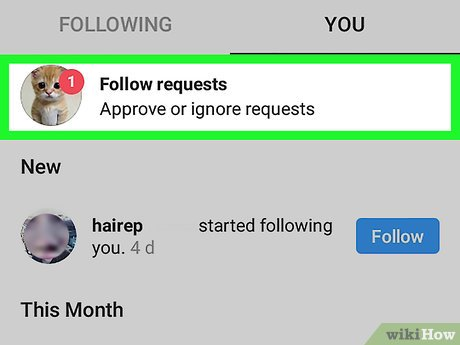
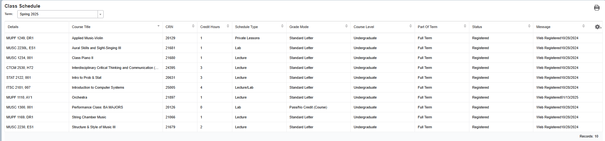
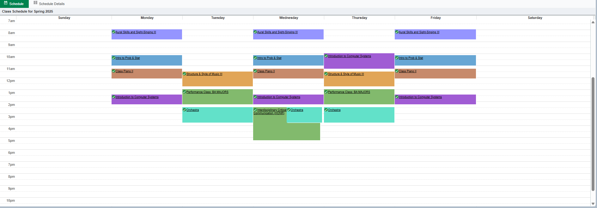
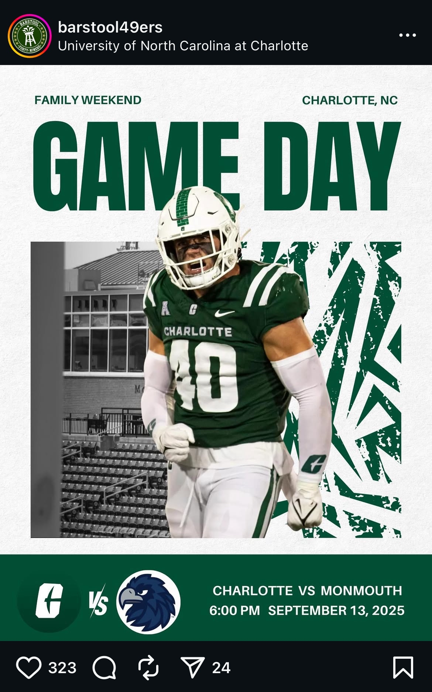

jacob About Me: Sharing honest advice and experiences about college life.
Lifestyle Post 1
August 29, 2025

How do you meet the right people at your college?
For many people, your first semester of college is an overwhelming fresh start in life at the very beginning of your adult life. You may be away from the friend group you stuck with through high school, and you are now looking for a new social circle. Social media could be your friend when it comes to keeping in touch with the people away from you now, but more than ever it is crucial to play things safe in a new environment away from home. For some women, you may not have even moved in, and after that change within your bio or a post saying where you are enrolling, it isn't uncommon to have a handful of people you have no prior contact with starting to follow you. It could be fine, but it is not uncommon for women to receive unsolicited messages from upperclassmen, specifically from men. Reaching out to your roommates in the summer before you all arrive to discuss who could be bringing what for a suite, or in a traditional style dorm, figuring out how your belongings can coexist in the same space, or just befriending your roommates, is recommended by myself. However, I have yet to hear a good thing about an upperclassman following incoming freshman women on his Instagram. Your interactions starting over text make it much easier for a possible predator to play a character from behind the screen. If you are able to go and make friends with someone you know you can trust, branching out is a much safer scenario considering the things that come with young adults being left unsupervised after a tame three month stretch in the summer.
Finding yourself is important in college, but so is finding the right people!
It might not happen the first try, but as long as you can make good decisions, and set boundaries with the new people in your lives, the other things can seemingly just fall into place. Those who flunk out of college aren't convicted by the jump in course material, but rather with how they deal with their newfound freedom. Be safe wherever you are!!!
0 likes💬 Comments
Lifestyle Post 2: Creating Your Schedule - Do's and Don'ts
September 5, 2025


Tip Number One: Don’t be afraid to pick and choose your battles!
Allow me to explain. We all know that higher education's price tag isn’t exactly getting much smaller, so you may feel inclined to “get every dollar” out of your education and write off registering for online or asynchronous classes. I am here to tell you, if you have an already packed schedule filled with running around campus from class to class like I did myself, you will lose more value out of your education from the exhaustion of running around from lecture to lecture as opposed to having a fully asynchronous class or just needing to join a zoom meeting from wherever you are. Naturally, there may be some classes you feel like you need to take in person to get that hands on experience, but for classes you feel you might not need to sit through with less essential information being taught or if you cannot consistently commute to a class consistently, it is much better to put your energy towards studying course material on your own time or joining an online lecture. Burnout is very real, and there will be days where you really feel unmotivated to get out of bed or run around for a day. Pace your days to keep burnout at bay!
Tip Number Two: Be honest, are you really going to go to that 8:00am class?
For some classes, you are just going to have to take what you get with their instruction times. I have been in that situation far too many times already. But a tip for all of those who need their sleep or have trouble waking up, avoid at all costs. Your workload throughout the semester will only increase more and more, and in my experience, with it, the quality of your sleep will decrease as well. It is of note to take some of this with a grain of salt, as I have been heralded as one of the world's heaviest sleepers, but with that being said, the hardest part of my day was frequently just waking up. Especially with those who live in dorms far away from their classes, or worse, those who are commuters.
Tip Number Three: Make sure your eligible credits from high school are recognized by your institution!
Most high school students end up taking an AP class before they graduate high school, and many colleges will take that credit and put it towards your degree. Some colleges will even take some of your high school credits that aren’t in the AP program and put them towards the completion of your degree as well. I am now in year 3 at UNC Charlotte, and miraculously having sent my AP credits sent twice before this, I have once again sent my AP scores for hopefully the final time. I do not believe that I have taken classes that would overlap with my eligible AP credits, but if I did, I would definitely be very mad having dedicated 2 or 3 credit hours all for naught. Your college may not accept your credits, but if they say they will, do everything in your power to verify that, and do NOT waste a couple credit hours on gen ed’s you could be using to get ahead with your major, or working towards the gen ed’s you don’t have any credit for.
0 likes
Lifestyle Post 3: Digital Footprint: The Danger of The School Snapchat Story
September 12, 2025

This week's post will be talking about your digital footprint as a college student.
Social media can be used to make connections with people, entertainment, or to just keep up to date with what's going on around the world. If you are going to a college with students living on campus, there is a very good chance that you have a public snapchat story to view at your own risk. Some of these posts are going to be completely uninteresting, some may be someone selling something, some may even be people posting about something they found that someone lost. But sometimes there is a post that catches the attention of everyone who sees it, and that usually isn’t a good thing for the person involved in it. This content isn’t even always something that was done for all surrounding people to see, and that is the scariest part of it all. You may have said something that you thought would fall on deaf ears or done something in what you thought was complete security and privacy, but in this day and age that is not the case. What you say and do can easily be pictured, screenshotted, and video’d, and unfortunately the only line of defense you have is your actions. Here at UNC Charlotte, there are accounts dedicated to almost anything you can think of, and some of them have thousands of followers who could very well be your classmates, and the same rule applies to many other colleges and universities. All in all, don’t become the hottest post on the Snapchat story or the Barstool page, but if you are too prideful to say you follow those pages for entertainment, take all of it as a learning opportunity of what NOT to do in college.